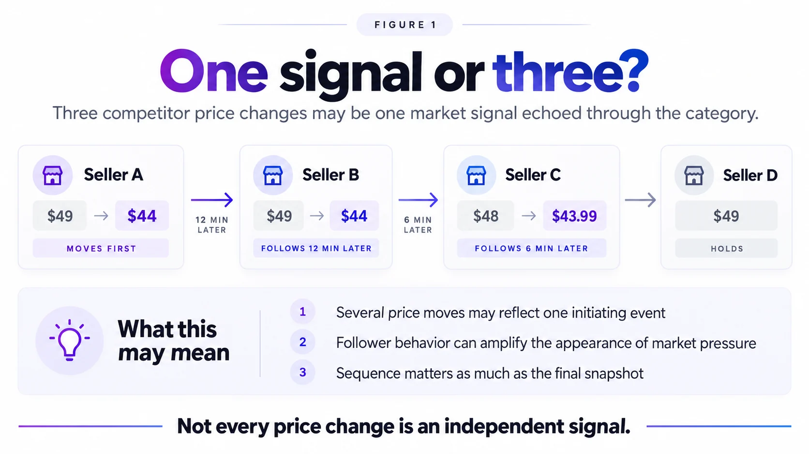
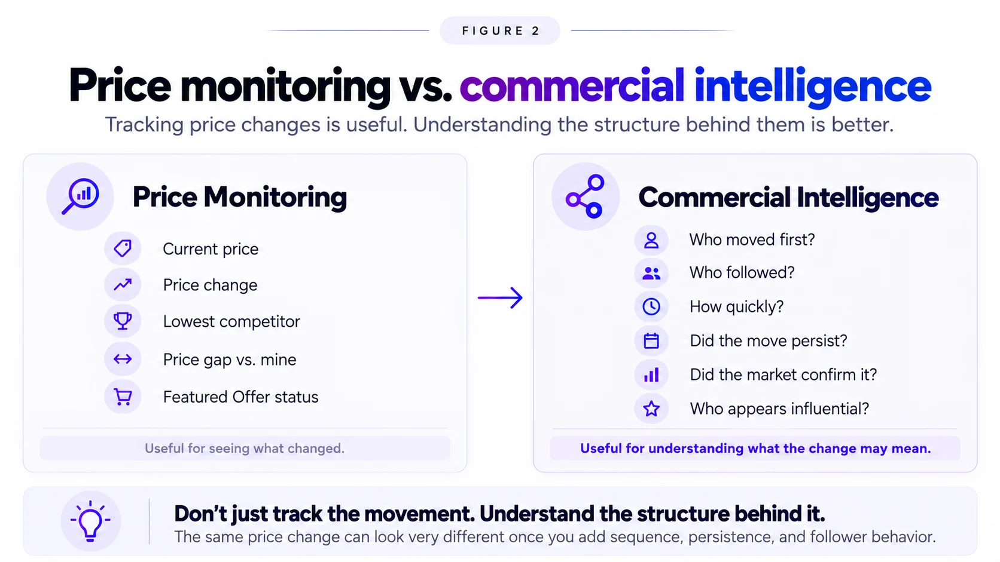

Imagine checking your competitive pricing and seeing this sequence:
Seller A moves from $49 to $44.
Soon afterward, Seller B is also at $44.
Later, Seller C moves from $48 to $43.99.
Seller D stays at $49.
At first glance, the conclusion feels obvious:
Three competitors lowered their prices.
Maybe the market is moving down. Maybe your price needs to move too.
But the final snapshot leaves out an important part of the story.
Perhaps Seller A moved first and the others reacted. Perhaps all three responded independently to the same outside event. Perhaps Seller A itself was reacting to a signal you never saw.
Those possibilities are commercially very different. And they lead to a more useful question:
Are we looking at several independent pricing signals—or one event being echoed through the market?
Illustrative scenario: The scenarios in this article are synthetic examples, not customer data. The timing shown is for illustration only and does not describe how often Pricenaux observes prices.
1. A snapshot tells you where the market is. A sequence can tell you much more.
Consider two markets that look exactly the same right now.
| Market 1 | Market 2 | |
|---|---|---|
| Seller A | $44 | $44 |
| Seller B | $44 | $44 |
| Seller C | $43.99 | $43.99 |
| Seller D | $49 | $49 |
Same prices. Same competitors. Same snapshot.
But suppose their histories are different.
In Market 1, sellers moved gradually over several days. Different competitors adjusted at different times, and the lower price range remained in place.
In Market 2, one seller moved first. Others changed soon afterward. Seller D held. Then the first seller returned to its original price.
Those two markets may deserve very different interpretations.
A current-price table cannot show that difference. The history of the movement can.
That is why price is not always just a number. Sometimes it is also an event.
And events become more useful when we understand what happened before them, what followed, and whether the movement lasted.

Figure 1. Several observed competitor price changes may represent independent decisions, responses to one initiating move, or reactions to the same external event. Sequence provides context, but does not by itself prove causation.
2. Several sellers moving can have more than one explanation
If Seller A moves first and Sellers B and C change afterward, it can be tempting to conclude: Seller A caused the others to move.
That would be too strong.
There are at least three plausible explanations.
Independent decisions
Each seller may have reached its own conclusion based on inventory, margin, demand, promotions, or strategy.
One movement may have influenced other pricing responses
Seller A may have changed price, and another seller's pricing rule or manual process may have reacted to the new competitive environment.
A shared external event may be affecting everyone
Several sellers may be responding to the same thing: a promotion, a manufacturer action, a marketplace event, an Amazon Retail price movement, a reference-price change, or another commercial signal.
Seller A may even be following someone outside the competitor set being monitored.
So the objective is not to declare:
The first seller to move is the leader.
It is to ask:
What pattern are we observing, and what evidence would make one explanation more plausible than another?
Sequence helps. Persistence helps. Repeated behavior helps. But timing alone does not prove causation.
3. Automation can make one market event look like several
This matters particularly in marketplaces where automated pricing is common. Amazon's Automate Pricing tools allow sellers to create rules that reference factors such as the Featured Offer, lowest price, or lowest external price.
Rules can be configured to price below, match, or remain above the relevant reference, while sellers set a minimum price and may optionally set a maximum price.
Now imagine Seller A changes price.
Seller B uses a rule tied to the lowest competitive price. Seller C uses a rule tied to the Featured Offer.
If Seller A's move changes the reference prices those rules are tracking, B or C may subsequently adjust.
The merchant may then observe three separate price movements.
All three changes are real. But they may not represent three independent conclusions about where the product should be priced.
The number of observed price movements is not always the same as the number of independent market signals.
And this is why simply counting competitor movements can sometimes exaggerate the appearance of market pressure.
The better question is not only: How many sellers moved? It is also: What may have connected those movements?
4. What do we mean by a "pricing leader"?
The word leader needs some care.
In this context, a pricing leader is not automatically the biggest seller, the lowest-priced seller, the brand owner, or the seller currently holding the Featured Offer.
We are interested in something more specific:
A seller whose price movements repeatedly appear early in market changes and are often followed by related movement from others.
Even then, the wording matters. We should say appears influential, not caused others to move.
Over time, patterns might include one seller frequently moving before others, similar sellers changing shortly afterward, that seller's moves persisting longer, broader market movement occurring after similar changes, or followers reverting when the earlier mover reverts.
No single observation establishes leadership. Repeated behavior is what makes the pattern interesting.
Price movement is not the same as price influence.
5. Persistence can completely change the meaning of a move
Now add time.
Suppose Seller A drops from $49 to $44. Other sellers move into a similar range. A few hours later, Seller A returns to $49. Later, the others move back as well.
Compare that with another situation.
Seller A moves lower. Other sellers follow. More competitors gradually enter the lower price range. The new level remains in place for several days.
At one point in time, those situations might look almost identical. Over time, they tell very different stories.
The first could reflect a short promotion, temporary inventory strategy, automated response, experiment, or other transient event.
The second begins to look more like a sustained change in the competitive environment.
That is why historical context matters. A price movement becomes more informative when you can see whether it was brief, repeated, persistent, isolated, or broadly confirmed.
6. Not every competitor deserves the same informational weight
Most businesses maintain competitor lists. Competitor A. Competitor B. Competitor C.
On a spreadsheet, every row looks equal. Commercially, they may not be.
One competitor may make deliberate, sustained moves. Another may run frequent short promotions. Another may react quickly to marketplace reference prices. Another may rarely move at all. And another may matter greatly because customers see its product as the closest substitute for yours.
That does not mean permanently labeling sellers as leaders or followers. Markets change. Strategies change. Automation changes. Inventory changes.
Instead, it means competitor movements should be interpreted in context.
Rather than asking only, "What is this competitor charging?" we can also ask:
What does this competitor's movement appear to mean within the wider market?
That is a more useful question.
7. Price still needs context
Two sellers displaying the same price are not necessarily in the same competitive position.
Marketplace context can include factors such as seller performance, delivery speed, fulfillment, availability, and Featured Offer activity.
So even when prices match, the commercial situation may not.
That is another reason competitive pricing is better treated as an interpretation problem, rather than simply a tracking problem. The objective should not be to create another alert every time something moves. It should be to understand whether the movement adds meaningful evidence.
8. A stronger signal is still not an instruction
Suppose repeated observations suggest one seller often appears early in broader market movements. Perhaps other sellers regularly move afterward. Perhaps its changes persist. Perhaps its movements seem to carry more information than those of another competitor.
Does that mean you should follow it? No.
In Your Competitor Just Cut Their Price. Should You Follow?, we established a principle that still applies:
A competitor's price change is a signal. It is not an instruction.
A stronger signal does not suddenly become a command.
Your own decision still has to pass through your commercial reality: margin, inventory, demand, brand position, risk, and business objective.
The market may appear to be moving lower. Your right response may still be to hold, partially move, wait for confirmation, or reposition.
Understanding the market should improve the decision. It should not replace it.
9. From price monitoring to commercial intelligence
Price monitoring is useful. It can tell you:
- What is the current price?
- Who changed?
- Who is lowest?
- What is the gap versus my price?
Commercial intelligence asks a second layer of questions:
- What happened first?
- What changed afterward?
- Could several sellers be reacting to the same event?
- Did the movement persist?
- Did the wider market confirm it?
- Does this competitor repeatedly appear early in similar movements?
And finally:
Does any of this actually justify closer review or a pricing response from us?
That is the progression that matters. Not more data for the sake of more data. Better context for deciding what deserves attention.
That is the idea behind Pricenaux's Market Timeline: historical context helps distinguish persistent competitive patterns from short-lived movement.

Figure 2. Price monitoring shows what changed. Commercial intelligence asks how the movements relate, whether they persist, and what they may mean before a pricing response is considered.
Founder Reflection
When we first started working on competitor pricing, it was easy to assume the hard part would be collecting more prices.
The more we worked with the problem, the less convinced I became.
Seeing that five competitors moved is useful. But I would rather understand whether five independent things happened—or whether one event rippled through the market.
And even then, I do not necessarily want another alert telling me to change price. I want enough context to understand whether the change deserves attention at all.
For me, that is where commercial intelligence becomes much more interesting.
The goal is not to make merchants watch the market more closely. It is to help them understand what in the market is actually worth watching.
- Nermin Sad, CEO & Co-founder, Pricenaux
Final Thought
The next time several competitors change price, do not stop at:
How many moved?
Ask:
What sequence did we observe?
Then:
Could these sellers be responding to one another—or to the same outside event?
And finally:
Did the wider market confirm the move?
Because three competitors changing price may not be three independent signals.
They may be independent. They may be responding to one another. Or they may all be reacting to something else.
The value is not in pretending we know the explanation immediately. The value is in knowing that the distinction matters.
Have a perspective on this topic?
Continue the discussion with Pricenaux and other operators on LinkedIn.
Join the LinkedIn Discussion